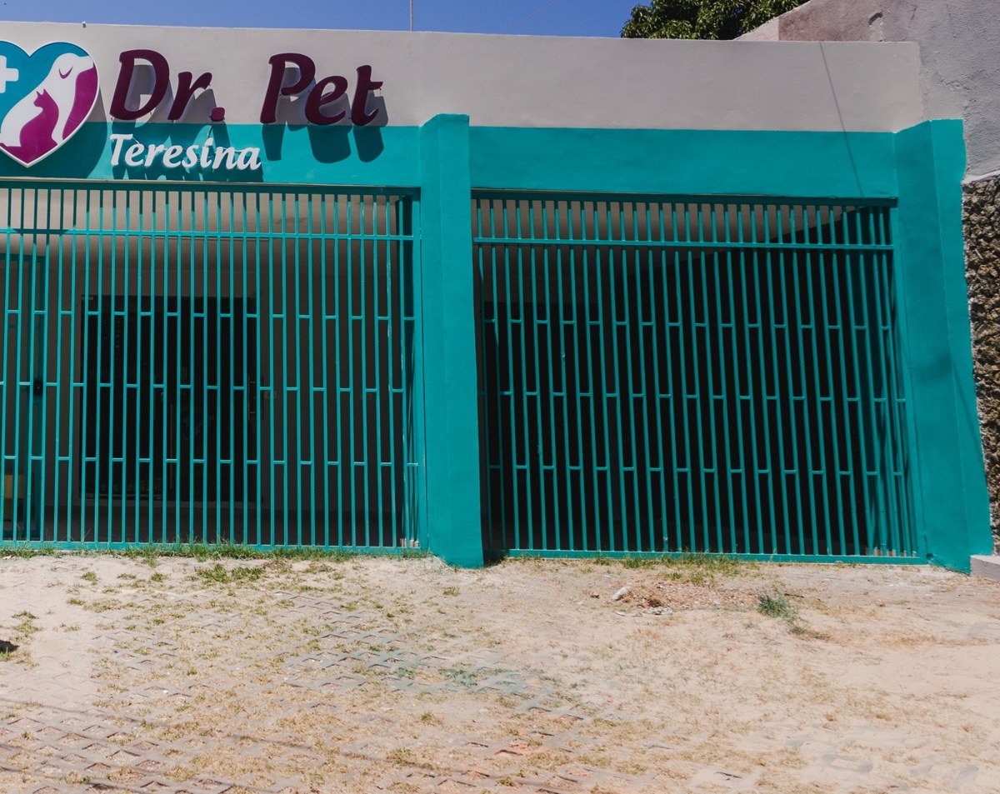

Banho e tosa.
Converse sobre o cuidado com a pelagem e combine o serviço com a equipe. Necessidades particulares do animal merecem orientação adequada.
Antes do banho e da tosa ↗Piçarra, Teresina · Para cães e gatos
Clínica veterinária
e pet shop.
Da saúde aos cuidados do dia a dia, um endereço na Leônidas Melo.
Escolher dia e hora de preferência ↓A recepção confirma o atendimento.Reconheça o endereço
É aqui que funciona a Dr. Pet Teresina, na Avenida Leônidas Melo. Um ponto de referência visual para planejar sua chegada com o pet.
Av. Leônidas Melo, 546
01 / Saúde
Conheça os serviços divulgados pela Dr. Pet. A avaliação do animal orienta as indicações e os próximos passos.
Avaliação veterinária de cães e gatos.
02Histórico e cuidado preventivo individual.
03Informações para conversar sobre a investigação clínica.
04Indicação e orientações definidas em avaliação.
Serviços divulgados pela clínica ↗ · Fonte: descrição própria no Google.
02 / Cotidiano
Converse sobre o cuidado com a pelagem e combine o serviço com a equipe. Necessidades particulares do animal merecem orientação adequada.
Antes do banho e da tosa ↗Rações, medicamentos, brinquedos, roupinhas, petiscos e acessórios são categorias divulgadas pela loja. Consulte os itens disponíveis.
Conheça as categorias ↗Quem está à frente
Médico-veterinário e proprietário da Dr. Pet Teresina.
Conheça o veterinário ↗Doutor em Ciência Animal, com autoria em artigos científicos. A produção acadêmica é apresentada como trajetória, não como especialidade clínica.
Antes de sair de casa
Orientações gerais para organizar a conversa. A equipe pode indicar cuidados específicos para cada serviço.
Consulta, vacinação, exame ou outro serviço: diga à recepção qual atendimento procura.
Se houver, tenha à mão a carteira de vacinação e documentos de atendimentos anteriores para a consulta.
Confirme horário, disponibilidade e qualquer orientação de preparo diretamente com a equipe.
Dia e hora de preferência
Escolha uma preferência. Você revisa a mensagem e decide se quer enviá-la pelo seu WhatsApp. Depois, a recepção verifica e confirma manualmente.
O formulário não consulta vagas e não confirma atendimento. Horários de funcionamento devem ser confirmados com a equipe.
Perfil público
4,9Google
232 avaliações
Nota e quantidade registradas no levantamento de 29/10/2026; podem mudar. Aqui não reproduzimos relatos de tutores nem experiências de pacientes.
Ver a ficha no Google ↗Perguntas práticas
Não. É somente uma preferência. Nenhum pedido é enviado automaticamente, e o atendimento depende da confirmação manual da recepção.
A apresentação pública da Dr. Pet Teresina informa clínica veterinária e pet shop para cães e gatos.
Pode haver orientações específicas conforme o procedimento e o animal. Não adote um preparo por conta própria; confirme com a equipe responsável.
Confirme os horários diretamente com a recepção antes de ir. Esta prévia não apresenta uma grade de funcionamento nem disponibilidade de vagas.
Contato
Saúde e cotidiano, na Piçarra
Conheça o serviço, confirme as informações e combine sua visita.
Planejar a chegada ↗Prévia feita pelo Doutor Sob Medida
Textos, fotos, cores e páginas: eu ajusto pelo WhatsApp até ficar do seu jeito.
Sem mensalidade. Domínio .com.br no seu nome, com o 1º ano incluído, e hospedagem.
No seu endereço, por exemplo teresinavetdrpet.com.br. A disponibilidade eu confiro com você.
JMJoão Mateus · Doutor Sob Medida · ver as condições